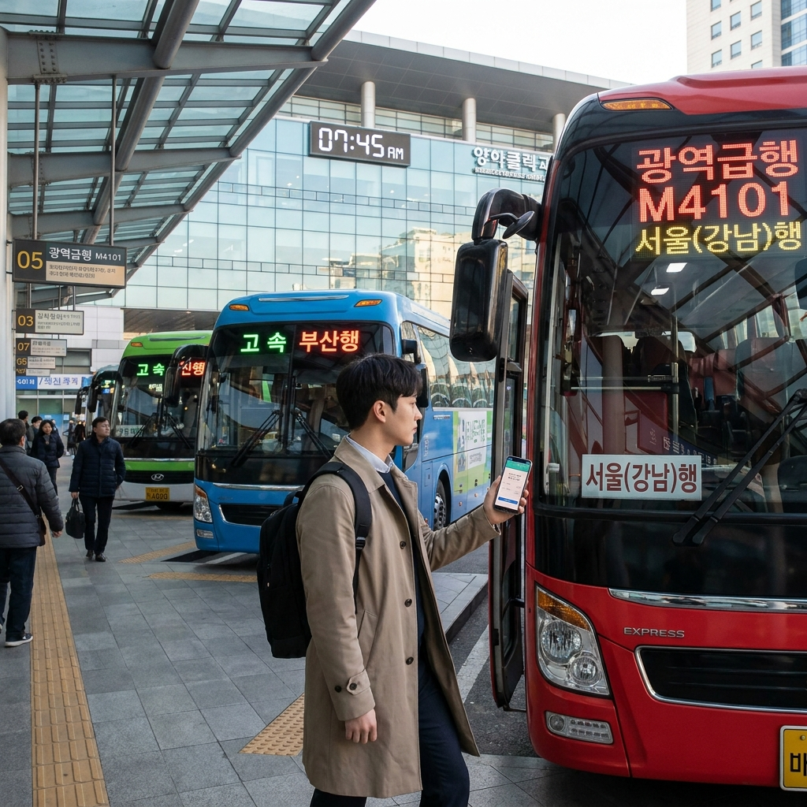
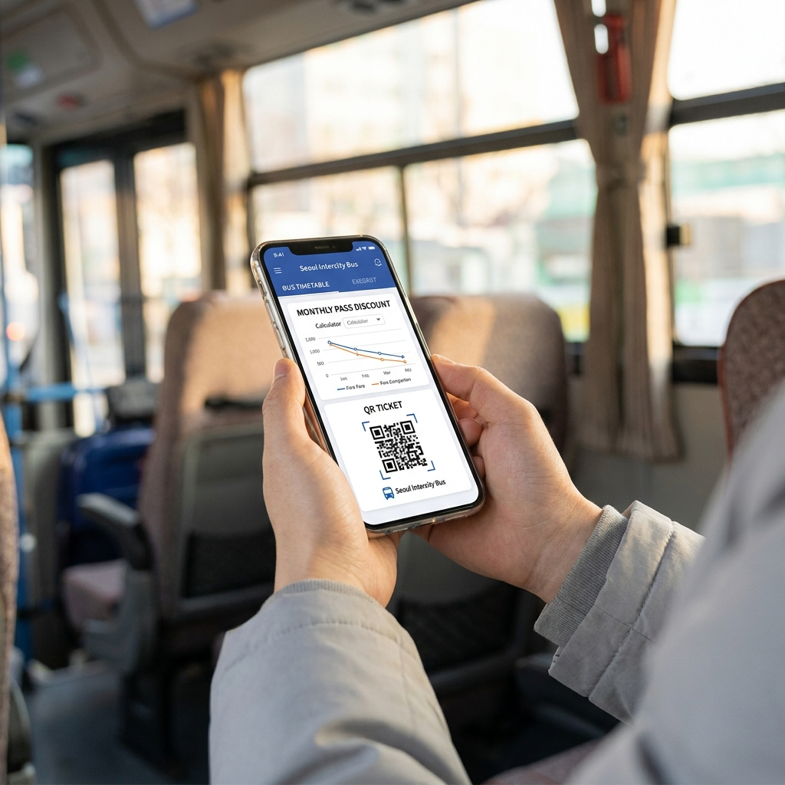

시외버스 정기권 있나 vs 광역버스 K-패스 환급 비교 — 통학·통근 노선별 요금 절약 계산표와 정기승차권 발권 팁
장거리 통근이나 대학 통학 시 광역버스는 K-패스 환급(일반 20%·청년 30%·저소득 53%)과 수도권 환승 할인이 100% 적용되는 반면, 터미널 발권형 시외버스는 K-패스 환급 대상에서 제외됩니다.
하지만 시외버스를 정기적으로 이용하는 통근·통학생의 경우, 운수사별로 운영하는 '시외버스 정기권 및 회수권'을 발권하면 정상 운임 대비 20%~30% 수준의 정액 할인을 받을 수 있습니다.
같은 장거리 구간이라도 노선 형태(직행좌석 광역버스 vs 시외직행버스)에 따라 적용되는 할인 제도와 월 지출 교통비가 수만 원 이상 차이 나게 됩니다.
주요 통학·통근 노선별 월 지출 교통비 계산표와 시외버스 정기권 발권 조건, 그리고 광역버스 대체 노선 확인법을 상세히 비교해 드립니다.

출퇴근 및 통학 버스 환승 승강장에서 교통카드 및 모바일 승차권을 확인하는 모습 / AI 제작 이미지
01 | 광역버스와 시외버스의 결정적 제도 차이 (K-패스 적용 여부)
수도권과 지방 대도시권을 오가는 장거리 통근자들이 가장 먼저 구분해야 할 점은 본인이 타는 버스가 '광역버스(직행좌석버스)'인지 '시외버스(직행·일반)'인지입니다.
두 버스는 외관상 비슷해 보이지만 법적 면허 체계와 요금 정산 방식이 완전히 다릅니다.
광역버스(빨간 버스, M버스, 경기순환버스 등)는 교통카드 단말기 태그 방식을 사용하며, 수도권 통합환승할인제도와 정부 K-패스 환급 사업의 공식 대상에 포함됩니다.
반면 시외버스는 시외버스 터미널 창구나 예매 앱('버스타고', '티머니GO')을 통해 좌석 승차권을 사전에 발권하여 탑승하는 별도 면허 교통수단입니다.
따라서 시외버스는 일반 대중교통 카드를 태그해도 수도권 지하철이나 시내버스와 환승 할인이 되지 않으며, K-패스 지출액으로도 집계되지 않아 환급금을 단 1원도 돌려받을 수 없습니다.
02 | 시외버스 정기권·회수권 제도란 무엇인가?
K-패스 환급이 되지 않는 시외버스 이용자들의 교통비 부담을 덜어주기 위해 국토교통부와 시외버스 운송사업자는 '시외버스 정기권 및 정액 회수권 제도'를 마련해 두고 있습니다.
시외버스 정기권은 통근자 및 통학생을 위한 1개월권(또는 일정 기간권) 형태로 발행되며, 지정된 구간을 반복해서 이용할 수 있는 권리를 부여합니다.
통근 정기권의 경우 통상 정상 요금의 20% 안팎 할인이 적용되며, 학생 신분을 증명하는 통학 정기권의 경우 최대 30%까지 할인된 금액으로 승차권을 구매할 수 있습니다.
또한 횟수 차감형인 모바일 회수권은 일정 매수(예: 10회권, 20회권)를 묶음 결제할 때 5~10% 수준의 추가 할인을 제공하기도 합니다.
다만 모든 시외버스 노선에서 정기권을 판매하는 것은 아니며, 출퇴근 수요가 집중되는 수도권 통근 노선(예: 춘천~서울, 천안~서울, 강화~신촌 등) 및 지자체 협약 노선을 중심으로 우선 운영되고 있습니다.
03 | 월 20일 출퇴근 기준 요금 비교표와 손익분기 계산
광역버스를 이용해 K-패스를 환급받는 경우와, 시외버스를 일반 예매 또는 정기권으로 이용할 때의 실제 월 교통비 지출액을 비교 계산해 드립니다.
(편도 4,000원 구간, 월 20일 왕복 40회 이용 기준 시뮬레이션)
| 구분 |
시외버스 (일반 편도 발권) |
시외버스 (정기권 20~30% 할인) |
광역버스 (K-패스 일반 20% 환급) |
광역버스 (K-패스 청년 30% 환급) |
| 1회 편도 기준 운임 |
4,000원 |
4,000원 (액면가) |
4,000원 (카드 태그) |
4,000원 (카드 태그) |
| 월 40회 총 운임 |
160,000원 |
160,000원 |
160,000원 |
160,000원 |
| 적용 할인/환급율 |
할인 없음 (0%) |
정기권 선할인 (20%~30%) |
K-패스 후환급 (20%) |
K-패스 청년 후환급 (30%) |
| 월 할인·환급 금액 |
0원 |
-32,000원 ~ -48,000원 |
-32,000원 (익월 캐시백) |
-48,000원 (익월 캐시백) |
| 실제 부담 교통비 |
160,000원 |
112,000원 ~ 128,000원 |
128,000원 |
112,000원 |
| 시내버스/지하철 환승 |
환승 불가 (기본요금 추가) |
환승 불가 (기본요금 추가) |
통합 환승 할인 적용 |
통합 환승 할인 적용 |
위 계산표에서 보듯, 시내 연계 교통(지하철, 시내버스)을 추가로 이용해야 하는 통근자라면 환승 할인이 적용되는 광역버스 + K-패스 조합이 압도적으로 유리합니다.
반면 터미널 근처에서 직장이나 학교까지 도보로 이동 가능한 직통 노선이라면 시외버스 정기권도 유의미한 절약 효과를 발휘합니다.
04 | 시외버스 정기권 발권 방법과 모바일 앱 구매 팁
시외버스 정기권은 과거 터미널 창구에서 종이 승차권으로 발급받던 방식에서 벗어나 점차 모바일 예매 시스템으로 전환되고 있습니다.
1. 터미널 현장 창구 발권: 출발지 시외버스 터미널 매표 창구에 방문하여 통근·통학 정기권 신청서를 작성하고 본인 신분증(학생의 경우 학생증 또는 재학증명서)을 제시하여 1개월 정기권을 구매합니다.
2. '버스타고(Bustago)' 및 '티머니GO' 앱 확인: 해당 노선이 모바일 정기권 지원 노선인 경우 앱 내 정기권/회수권 메뉴에서 구간을 선택하고 모바일 티켓을 결제할 수 있습니다.
3. 주의 사항: 정기권은 원칙적으로 본인 1인만 사용 가능하며, 타인에게 양도하거나 대여할 경우 적발 시 부가운임이 징수되고 회수 조치될 수 있습니다.
4. 환불 규정: 사용 개시 전에는 전액 환불이 가능하지만, 사용 개시 후에는 이용한 일수(또는 정상 편도 운임 기준 차감)에 따라 수수료가 공제되므로 방학이나 휴가 일정을 고려해 구매하셔야 합니다.

모바일 앱을 통해 출퇴근 시외버스 정기권 잔여 횟수 및 노선별 운임을 확인하는 모습 / AI 제작 이미지
05 | 광역버스 대체 노선 찾는 법 (포털 지도 활용법)
매일 고정적으로 시외버스를 타며 환승 할인과 K-패스 혜택을 놓치고 있다면, 동일 구간을 운행하는 광역버스나 직행좌석버스가 있는지 반드시 재확인해야 합니다.
최근 몇 년간 국토교통부 대도시권광역교통위원회(대광위)는 기존 시외버스 노선을 준공영제 광역버스로 전환하거나 신설하는 정책을 지속해서 추진해 왔습니다.
네이버 지도나 카카오맵 길찾기 검색 시 '대중교통' 탭에서 '버스만' 옵션을 선택한 후 검색해 보세요.
만약 빨간색 직행좌석버스(예: G버스, M버스 등) 번호가 나온다면 해당 노선은 100% K-패스 환급과 지하철 환승 할인이 적용되는 버스입니다.
소요시간이 시외버스와 비교해 5~10분 정도만 차이 난다면, 한 달 교통비를 4~5만 원 이상 아낄 수 있는 광역버스로 전환하는 것이 현명한 선택입니다.
06 | 시외버스 통학·통근 승차권 예매 시 카드 할인 꿀팁
시외버스를 대체할 광역버스가 없어 시외버스를 계속 이용해야 한다면, 교통 특화 신용카드·체크카드의 시외버스/고속버스 청구할인 혜택을 적극 활용해야 합니다.
많은 교통 할인 카드가 '대중교통(지하철·시내버스)'에만 혜택을 한정하고 있지만, 일부 카드는 '고속·시외버스 예매처(버스타고, 티머니GO, 터미널 현장 결제)'를 할인 업종으로 지정해 두고 있습니다.
전월 실적에 따라 시외버스 결제 금액의 5%에서 최대 10%까지 청구할인이나 캐시백을 제공하므로, 시외버스 정기권이나 일반 승차권 결제 시 해당 카드를 결제 수단으로 등록해 두시면 추가적인 비용 절감이 가능합니다.
단, 간편결제(네이버페이, 카카오페이 등)를 경유할 경우 가맹점명이 간편결제사로 찍혀 카드사의 시외버스 할인 혜택이 누락될 수 있으므로 반드시 일반 카드 결제 모듈을 이용하시기 바랍니다.
07 | 통학·통근 교통비 절약 실전 점검 체크리스트
매월 지출되는 장거리 통근 교통비를 최소화하기 위해 반드시 점검해야 할 핵심 목록입니다.
🎫 장거리 통근·통학러 교통비 점검 체크리스트
1. 탑승 버스 면허 확인: 교통카드 단말기 태그 방식인가, 터미널/앱 좌석 발권 방식인가?
2. 환승 필요 여부 계산: 목적지까지 직통인가, 아니면 시내버스나 지하철을 갈아타야 하는가?
3. 광역버스 대체재 유무: 인근에 100% K-패스 환급이 되는 직행좌석/광역급행(M) 버스 정류장이 있는가?
4. 정기권 운영 여부 문의: 시외버스 이용 시 해당 노선 터미널 창구 또는 운수사에 1개월 정기권 발행 여부 확인
5. 청년 조건 확인: 만 19세~34세(지자체에 따라 만 39세) 청년이라면 광역버스 이용 시 30% 환급 적용 필수 등록
08 | 2026 교통패스 개편과 장거리 대중교통 이용 전망
2026년 대중교통 요금 체계는 지자체별 맞춤형 패스와 K-패스의 유기적 결합으로 더욱 정교해지고 있습니다.
경기도민을 위한 'The 경기패스', 인천시민을 위한 '인천 I-패스' 등은 광역버스를 매일 이용하는 장거리 통근자에게 K-패스 혜택에 더해 환급 횟수 무제한 및 청년 연령 확대 혜택을 제공하고 있습니다.
정부와 대광위 역시 시외버스와 광역버스 간의 요금 격차를 해소하고 대중교통 이용을 장려하기 위해 통합 환급 대상 확대를 지속적으로 검토하고 있습니다.
교통비는 매달 고정적으로 나가는 필수 지출인 만큼, 정책 변화와 본인 통근 패턴을 면밀히 분석하여 최적의 교통수단을 선택하시기 바랍니다.
09 | 핵심 요약 및 최종 권장 가이드
장거리 통학·통근 요금 절약의 핵심은 "광역버스가 있으면 무조건 K-패스, 광역버스가 없는 장거리 직통 노선이라면 시외버스 1개월 정기권"으로 요약할 수 있습니다.
지하철이나 시내버스로의 환승이 필요한 수도권 출퇴근러는 광역버스를 탈 때 누적 환승 할인과 월말 20~30% 사후 환급금이 합쳐져 가장 큰 금전적 이득을 누릴 수 있습니다.
반면 터미널 간 순수 직통 이동만 필요하고 배차간격이 시외버스가 훨씬 유리한 지방 간 이동 구간이라면 터미널 창구나 모바일 앱을 통해 정기권 또는 묶음 회수권을 구매하여 즉시 20~30% 할인을 챙기시는 것이 가장 경제적입니다.
본인의 출퇴근 경로와 정류장 위치를 꼼꼼히 대조해 보시고 매달 새어나가는 교통비를 확실하게 방어해 보시기 바랍니다.
#시외버스정기권
#광역버스K패스
#시외버스할인
#통학버스요금
#출퇴근교통비절약
#K패스환급
#수도권환승할인
#버스타고예매
#장거리통근
#교통비계산표